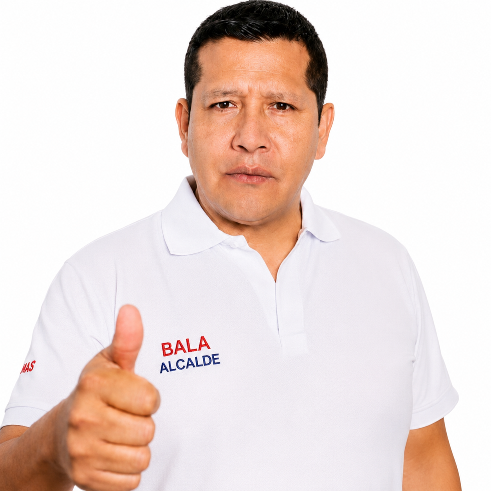

Candidato a la alcaldía de Sihuas. Trabajo cercano, decisiones rápidas y obras que se sienten en cada centro poblado del distrito.

Abdón Casahuamán, conocido en el distrito como “Bala”, postula a la Alcaldía Distrital de Sihuas con una propuesta de gestión cercana a los centros poblados y caseríos, no solo a la capital de distrito.
[Espacio para reseña biográfica real: lugar y año de nacimiento, formación académica, trayectoria laboral y comunitaria, experiencia previa en gestión pública o liderazgo vecinal. Reemplazar este texto por la biografía oficial y verificada del candidato.]
Su apodo, “Bala”, es reconocido por los vecinos del distrito y refleja su forma directa de resolver los problemas cotidianos de la población.
“[Espacio para una frase de campaña o cita textual del candidato sobre su visión para Sihuas.]” — Abdón “Bala” Casahuamán
El Partido Democrático Somos Perú fue fundado en 1995 por Alberto Andrade, quien fue alcalde de Lima entre 1996 y 2002. Su símbolo es el corazón rojo, y actualmente mantiene comités partidarios en buena parte del país, con autoridades regionales, provinciales y distritales electas en distintas zonas del Perú. Bajo esta agrupación postula Abdón “Bala” Casahuamán a la Alcaldía Distrital de Sihuas.
Ejes de trabajo de ejemplo — reemplázalos por el plan de gobierno oficial y registrado ante el JNE.
Fortalecimiento de vías rurales, sistemas de riego y apoyo técnico para productores de papa, trigo y ganado de las zonas altas del distrito.
Mejora de infraestructura escolar en centros poblados, acceso a internet en instituciones educativas y becas para jóvenes sihuasinos.
Equipamiento del centro de salud, campañas médicas itinerantes hacia caseríos alejados y atención prioritaria a adultos mayores.
Puesta en valor de los paisajes y lagunas de Sihuas, señalización de rutas turísticas y capacitación a emprendedores locales.
Mantenimiento periódico de trochas carrozables que conectan la capital de distrito con los caseríos más alejados.
Implementación de serenazgo rural, alumbrado público en zonas vulnerables y coordinación con rondas campesinas.
Nombres de ejemplo — completar con los candidatos a teniente alcalde y regidores tal como figuran inscritos ante el JNE.
El número de regidores lo define el JNE según la población electoral del distrito de Sihuas — ajustar la cantidad de tarjetas a la cifra oficial antes de publicar.
La provincia de Sihuas agrupa 10 distritos. Nombres de ejemplo — completar con los candidatos a alcalde distrital que postulan junto a Bala en cada uno.
Carrusel de ejemplo — reemplaza cada marco por fotos reales de mítines, visitas a caseríos y actividades de campaña.
Datos referenciales del distrito — verificar y actualizar con fuentes oficiales (INEI, municipalidad) antes de publicar.
Escríbenos directamente por WhatsApp o Facebook con el botón flotante, o usa cualquiera de estos medios.